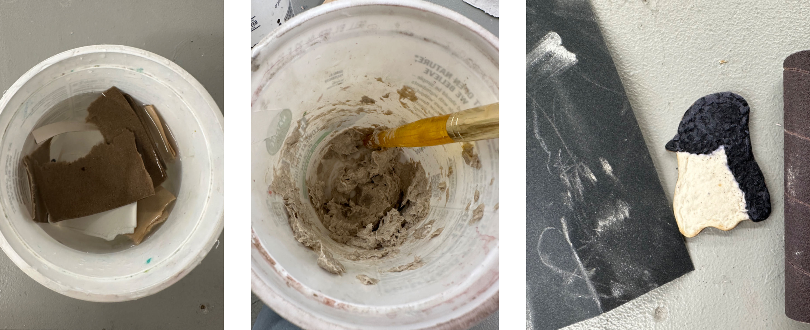
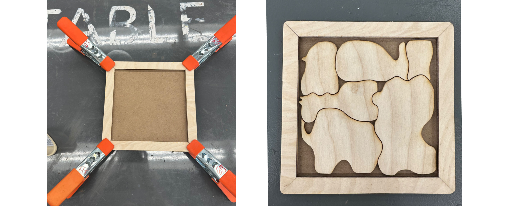
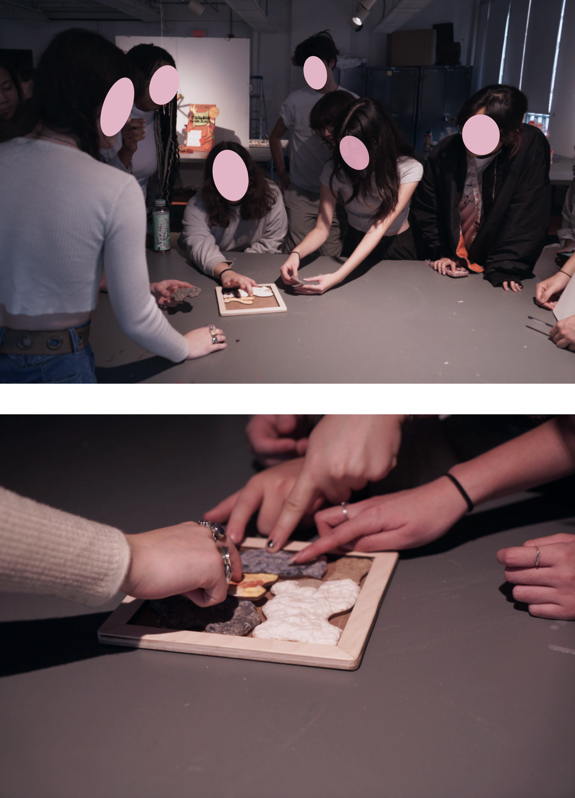

Textured Animal Puzzle
Fall 2023
Challenge:
Create a tactile puzzle that supports children's motor skill development while exploring how natural materials and papermaking techniques can introduce varied textures for sensory learning.
Design:
Used papermaking methods to produce textured surfaces by incorporating materials such as sawdust, soil granules, plant fibers, and pressed plastic bag fragments. These handmade papers were applied to wooden puzzle pieces shaped like animals. Each texture reflects characteristics of the animal—for example, a sheep piece features a bumpy surface to resemble wool.
Outcome:
A tactile wooden animal puzzle that encourages children to grasp, place, and explore different textures, combining sensory play with natural material experimentation.






